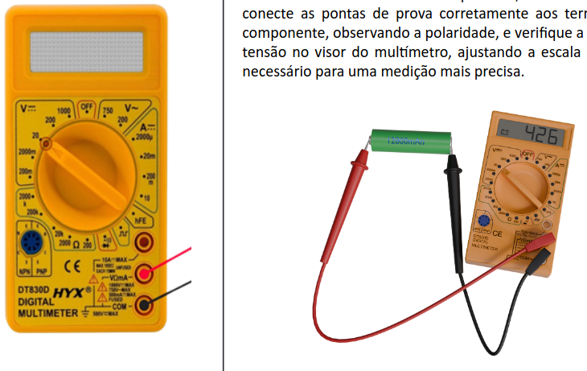
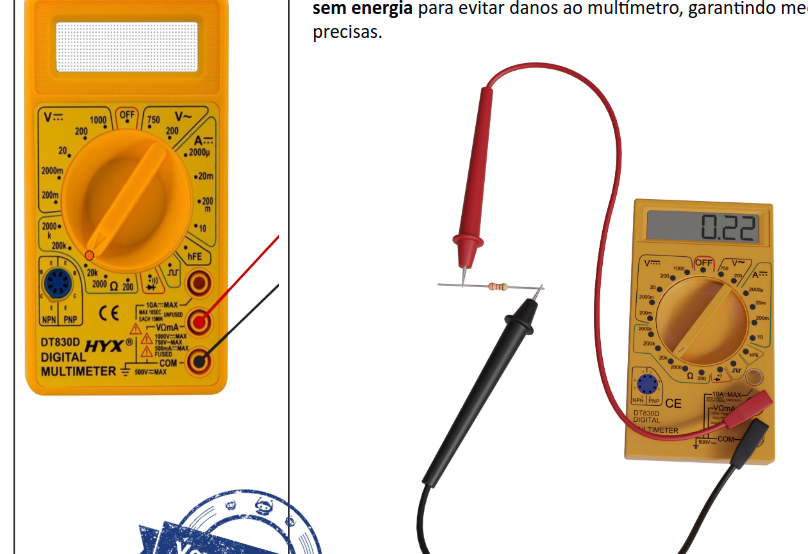
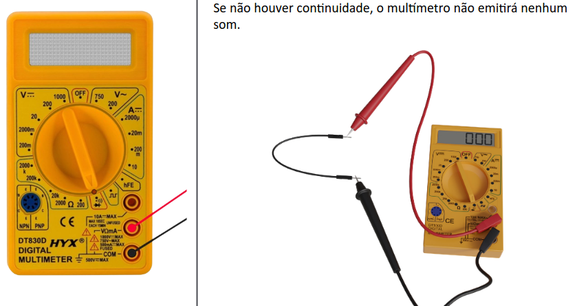

O multímetro é um instrumento de medida elétrica com capacidade de medir várias grandezas, como tensão,
corrente e resistência, contibuidade e polaridade.
Tensão: medida em volts (V), representa a diferença de potencial elétrico entre dois
pontos.
Corrente: medida em amperes (A), representa o fluxo de elétrons em um circuito.
Resistência: medida em ohms (Ω), representa a oposição ao fluxo de corrente elétrica.
Tensão alternada
Energia doméstica Coloque no 750v no V~
Tensão continua
Energia de pilhas e baterias coloque 20v em V=

Resistência
Coloque na escala de Ω (Ohm)

Continuidade
Coloque na escala de diodo

Corrente continua
Coloque na escala de Amperes A= e troque o cabo positivo